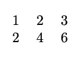
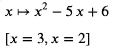

Using LaTeX In Python
It’s no surprise that Python should have good support for using LaTeX. Python recently became the number one programming language, especially for scientific and mathematical applications. For many years, LaTeX has been the top tool for typesetting documents for math and science.
In Jupyter, both traditional Jupyter notebooks and JupyterLab support using LaTeX math expressions in Markdown cells. Moreover, in JupyterLab, you can edit complete LaTeX documents, and a third-party extension enables building these files automatically and getting a live preview of the results.
In addition to the support provided by Jupyter, Python Computer Algebra systems also boast LaTeX features. SymPy and SageMath, the two major ones, support displaying mathematical expressions using LaTeX. They also allow you to access the underlying LaTeX code itself. In both cases, there are some options for controlling the LaTeX output.
In addition to Jupyter and the Python symbolic math tools, there are third-party Python packages that work with LaTeX. We’ll examine one of the more practical and well-maintained of these, Latexifier.
LaTeX in Jupyter Markdown
In one respect, Jupyter lets you start integrating math expressions into Markdown cells easily and quickly. This section will show you how to do this and some basic “alignment” tricks.
Centering Math Output
Suppose you have a math expression that you want to display neatly formatted and centered. In this case, you can begin a block using two dollar signs, $$, insert the LaTeX code for the expression, and end the block again with two dollar signs. For example:
$$
\lim_{x\to0} \frac{\sin{x}}{x} = 1
$$
Output:
Our purpose here does not leave us space for a comprehensive LaTeX tutorial, but if we look at the source, we can get a basic feel for how it works. Here we have a \lim_ directive, which we follow with an underscore and brackets containing what we want to appear underneath the limit. Next, we declare the function, beginning with a fraction, which takes two bracket pairs (numerator and denominator). You’ll find this basic pattern of \directive{parameter...} everywhere in LaTeX.
Left-Aligning and Inline LaTeX Blocks
If we want the same block to appear left-aligned, we can keep the core limit line the same as before, but we need to do two things. First, we need to change the double dollar signs to single. That alone will left align the output, as shown below:
Notice, however, that the term of the limit “as x approaches zero” no longer appears underneath the limit as we expect, and the rest of the expression looks slightly different as well. To fix this and make the output consistent with the centered version, we need to add the second piece of the puzzle, an alignment directive. Here’s how the code and output will look:
$
\begin{align}
\lim_{x\to0} \frac{\sin{x}}{x} = 1
\end{align}
$
Output when evaluated:
Inlining a block uses the same single dollar signs to start and end a block but without any leading or trailing new lines. Take, for example, a sentence that looks like this:
To get that result, we include the math expressions in inline blocks in the text:
The function $f(x) = \frac{17}{x-4}$ has a discontinuity at $x = 4$.
An Important Caveat: MathJax vs. LaTeX
Before leaving this section, we should mention one “issue” with Jupyter’s “LaTeX” support that you may encounter. Jupyter adds LaTeX support to Markdown via MathJax, a JavaScript library for formatting and displaying math expressions. What this means is that for math expressions and a very small subset of formatting and other non-math expressions, Jupyter works flawlessly. So although you’re using a subset of the LaTeX language that works quite well, this is not actually a LaTeX build environment.
Because of this, often you’ll find that if you try to search for how to do something in LaTeX, you’ll find a technique that is not supported by MathJax. Most of the reference material online is not for MathJax, but for LaTeX itself. For example, you may often find documentation for solutions that rely on importing some library using the \usepackage directive, or perhaps on creating a LaTeX table.
You don’t really get an error per se in such cases – you’ll just get weird-looking results. Consider the following LaTeX source and output.
$$
\usepackage{amsmath}
$$
$$
\begin{table}[]
\begin{tabular}{lll}
1 & 2 & 3 \\
2 & 4 & 6 \\
\end{tabular}
\end{table}
$$
Output when the cell is evaluated:
The first directive should give no output at all, the second should show an actual table that looks like this:

If you’re dealing with math expressions, MathJax gives beautiful results and can generally do exactly what you need. (To give you an idea, MathJax underlies the math expressions on the popular Paul’s Math Notes site). But keep in mind that although MathJax supports a subset of LaTeX brilliantly, it’s still just a subset. If you have non-mathematical LaTeX-formatted content that must appear “as-is” in Jupyter, you’ll likely find the easiest way forward to be via an embedded screenshot.
LaTeX Files in JupyterLab
In addition to the MathJax support that’s available from the classic notebook and forward, in the case of JupyterLab, that tools extension support means that you can use JupyterLab as an editor for “real” LaTeX files. To do this, you’ll need to have a compiler that can convert .tex files to PDFs, which is generally available in many TeX distributions. In addition, you’ll need to install the jupyterlab_latex extension, for example, by running conda install jupyterlab_latex -y or pip install jupyterlab_latex.
Once you have these installed, you can click right-click on a LaTeX document in a file with the .tex extension to bring up a LaTeX preview window. This window will update every time the corresponding source is changed. The screenshot below shows how this might look for some of the directives that failed earlier when we tried them in Markdown. At this point, we’re no longer dealing with MathJax, but LaTeX itself.
LaTeX in SageMath and SymPy
In addition to working with LaTeX directly in Jupyter, Python’s two popular symbolic math tools, SageMath and SymPy, both support viewing their expressions in LaTeX. There are, however, some differences in how they approach this:
For SageMath, displaying the expressions using MathJax in the browser requires a separate call to the
showfunction, whereas in SymPy, the output is formatted via MathJax by default.SageMath can output LaTeX expressions just as SymPy can, but SageMath can’t parse them to create SageMath objects from LaTeX. SymPy does include an experimental parser for LaTeX, but it sometimes produces unexpected results even for simple functions created in SymPy, so it has a long way to go.
When generating output, SageMath controls detailed LaTeX formatting via a global object (so it handles “universal” defaults well). In SymPy, options to control the output can be passed into the
latexfunction itself.
With that brief introduction, let’s look at a few examples. We’ll take the case of SageMath first. To show both a function and its solution set using MathJax, you simply display each using the show method.
# Create the function and the solution in SageMath
f(x) = x^2 -5*x + 6
solution = solve(f, x)
# Display them both using MathJax
show(f)
show(solution)
Output:

By the way, that vertical pipe with an arrow is read as “maps to”. SageMath shows functions using a \mapto symbol, to show that the function f maps x to whatever function body you declared, in our case x2 - 5x + 6.
To get the LaTeX source in SageMath, simply call the latex function, passing in the expression you want to convert. If you need to see the string in a format that you can paste into Python or other code (i.e., you want the escape sequences you’d need), wrap it in a str constructor. For example, here’s how to get it both ways for our function, f:
As we mentioned earlier, in SageMath, the default output is nicely formatted in MathJax, so the need to call show largely disappears. The downside of that is that it’s not obvious how one might have several calls to “show” different objects via MathJax in the same cell. In SageMath, the easy thing to do in this case is just to split the code into multiple cells, as shown below:
As in Sage, you can also get the string representation in SymPy, with or without escape sequences:
# Show the LaTeX:
print_latex(solution)
# Get the LaTeX string with the escape sequences
latex(solution)
Output:
\left[ 2, \ 3\right]
'\\left[ 2, \\ 3\\right]'
Other Packages in Python
There are a number of LaTeX utilities that are published as third-party Python packages (on PyPi). One interesting one, latexify-py, converts math-oriented Python functions into LaTeX. However, this package only supports a narrow range of Python versions and does not appear to be maintained currently.
A more up-to-date package in this space is latexifier. The latexifier module supports a few different Python types including plain lists, tuples, and SymPy expressions. One really great feature is its ability to handle NumPy arrays directly In this section we’ll show how to do this. Along the way, we’ll also discuss how you can take any MathJax-compatible string and display it in Jupyter.
With latexifier installed, the code below does the following:
Creates a 2-D NumPy array.
Converts it to a string representing a matrix
Outputs it using IPython.display.Latex
import numpy as np
from latexifier import latexify
from IPython.display import Latex
# Create a sample "Matrix" (NumPy 2-D array)
MM = np.arange(1,13).reshape(3,4)
# Specify that we want newlines and we want curly braces ("Bmatrix") as the matrix display type.
converted = latexify(MM, newline=True, arraytype="Bmatrix")
print("Showing converted LaTeX string:\n")
print(converted)
print("\n\nDisplaying it using the Latex method of IPython.display:\n")
Latex(converted)
Output:
By converting it to a one-dimensional NumPy array first, we can take a simple Python list and display it as either a row vector or a column vector:
Here’s the setup for that:
# A simple python list
a_list = [2,4,6,8]
one_d_array = np.array(a_list)
as_row = latexify(one_d_array, column=False)
as_column = latexify(one_d_array, column=True, arraytype="bmatrix")
That done, we can display the vector both ways:

Source Code and Additional Resources
You can get the source for this article in the associated GitHub repository, or download it (zip file). The README contains a resources section with some other links you may find helpful for getting started in LaTeX.
The image for this article was just for fun and was created using the techniques we’ve covered here. That business underneath the Python logo tells you what you can use in MathJax, and can be read as “the set of all elements such that the element is a subset of LaTeX and the element is in the set of math expressions.”